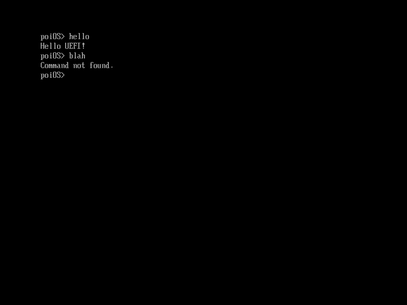

编写一个简单的Shell
现在，我们已经了解了在控制台屏幕上输入和输出字符的方法。要编写一个类似于操作系统的程序，我们首先需要编写一个类似于Shell的程序。本节示例代码的目录为shell (日文版为sample2_2_shell)。
在这个例子中，我们会组织一个文件结构，这个结构将会是接下来编写类操作系统程序的基础。这里我们把一些代码适当地封装为函数，并且按照下面的规则放在多个文件中。
main.c: 程序入口点（efi_main函数）efi.h,efi.c: UEFI标准定义和初始化函数common.h,common.c: 通用定义和函数shell.h,shell.c: Shell程序的实现
由于在UEFI下几乎任何操作都需要用到系统表（System Table），因此我们把入口点函数的SystemTable参数保存在一个全局变量中。这一操作将在efi.c（代码3.7）中的初始化过程（efi_init函数）中进行1。并且efi_init会调用SetWatchdogTimer函数，这点将在稍后说明。
#include "efi.h"
#include "common.h"
struct EFI_SYSTEM_TABLE *ST;
void efi_init(struct EFI_SYSTEM_TABLE *SystemTable)
{
ST = SystemTable;
ST->BootServices->SetWatchdogTimer(0, 0, 0, NULL);
}
代码3.7: shell/efi.c
代码3.8展示了一个简单的Shell程序的代码。代码3.9则是这个程序的入口点函数。
#include "common.h"
#include "shell.h"
#define MAX_COMMAND_LEN 100
void shell(void)
{
unsigned short com[MAX_COMMAND_LEN];
while (TRUE) {
puts(L"poiOS> ");
if (gets(com, MAX_COMMAND_LEN) <= 0)
continue;
if (!strcmp(L"hello", com))
puts(L"Hello UEFI!\r\n");
else
puts(L"Command not found.\r\n");
}
}
代码3.8: shell/shell.c
#include "efi.h"
#include "shell.h"
void efi_main(void *ImageHandle __attribute__ ((unused)),
struct EFI_SYSTEM_TABLE *SystemTable)
{
SystemTable->ConOut->ClearScreen(SystemTable->ConOut);
efi_init(SystemTable);
shell();
}
代码3.9: shell/main.c
在代码3.8中使用了"poiOS"作为命令提示符来使得这个程序更像是一个操作系统2。
代码3.8中所使用的各种常量，以及puts、gets和strcmp这些函数，都定义在common.h和common.c中。它们仅仅是一些对迄今为止我们所讨论过的UEFI内置功能封装后的函数，由于它们并没有什么特别的实现方式，因此我们在此不详细讨论它们。如果你想一探究竟的话，可以去GitHub下载完整的源代码。
代码3.9中，efi_init函数初始化UEFI执行环境，并通过调用shell函数启动Shell。接下来的内容中，我们将不会修改main.c。
图3.3展示了这个程序的运行情况。

图3.3: Shell运行时的截图
解除5分钟的看门狗计时器（Watchdog Timer）限制
事实上，在UEFI应用程序启动时，看门狗计时器将会被设置为5分钟。所以如果你什么都不做的话，UEFI应用程序运行5分钟后，固件将会重启计算机。看门狗计时器可以通过
SystemTable->BootServices->SetWatchdogTimer来禁用。函数
SetWatchdogTimer的定义如代码2.10所示（标准文档"6.5 Miscellaneous Boot Services(P.201)"）。unsigned long long (*SetWatchdogTimer)( unsigned long long Timeout, unsigned long long WatchdogCode, unsigned long long DataSize, unsigned short *WatchdogData);代码3.10:
SetWatchdogTimer的定义它的参数含义如下：
unsigned long long Timeout: 看门狗计时器的超时时间（秒为单位）。为0则禁用，禁用时其他的参数可为0或NULL。unsigned long long WatchdogCode: 看门狗计时器超时时的事件ID。本书不使用。unsigned long long DataSize:WatchdogData的内容大小（字节为单位）。unsigned short *WatchdogData: 指向空字符结尾字符串的指针。看门狗超时事件的描述，将会随事件记录至日志中。本书不使用。3而禁用看门狗计时器的示例代码如代码3.11所示。
ST->BootServices->SetWatchdogTimer(0, 0, 0, NULL);代码3.11: 禁用看门狗计时器
在EDK2或是gnu-efi等开发环境和工具链中同样也将SystemTable保存在全局变量中
作者本来想使用"mockOS"或是"OSmodoki"作为命令提示符，但经过一番搜索，这两个名字都已经有人用了
译者注：作者原文为“可选，本书不使用。另外，我也不知道这是什么（看门狗事件发生时的附加描述？）”，此处为译者的理解